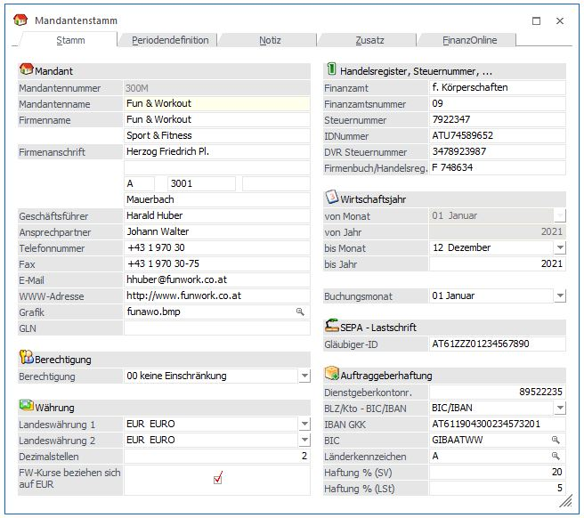
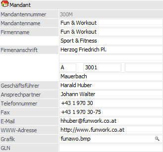
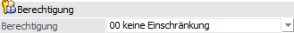
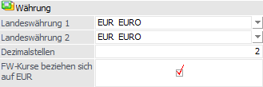
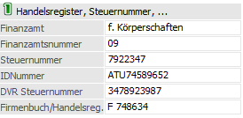
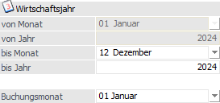
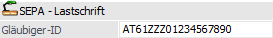
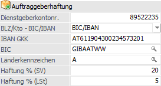

Im Register "Stamm" können die allgemeinen und zugleich wichtigsten Informationen zu dem Mandanten hinterlegt werden.

Folgende Eingabefelder und Einstellungen stehen zur Verfügung:
Mandant

Ø Mandantennummer
Die Mandantennummer (4stellig, alphanumerisch) ist die Identifikationsnummer der Firma und wird bei der Mandantenanlage vergeben.
Ø Mandantenname
Der Mandantenname (30stellig, alphanumerisch) wird im Standard auf jeder Auswertungslisten angedruckt.
Ø Firmenname
An dieser Stelle kann (2 Zeilen je 255stellig, alphanumerisch) kann der exakte Firmenwortlaut hinterlegt werden.
Ø Firmenanschrift
Neben dem Mandanten- und Firmennamen kann die Firmenanschrift eingetragen werden, welche auf zahlreichen Auswertungen angedruckt werden kann.
ü Straße
ü Länderkennzeichen
ü PLZ
ü Ort
Ø Weitere Hinterlegungsmöglichkeiten
Zusätzlich stehen folgende Eingabefelder zur Verfügung:
ü Geschäftsführer
Hinterlegung
des Geschäftsführers / der Geschäftsführerin.
ü Ansprechpartner
Hinterlegung
des Ansprechpartners / der Ansprechpartnerin.
ü Telefonnummer
Angabe der
Telefonnummer des Unternehmens.
ü Fax
Angabe der Faxnummer des
Unternehmens.
ü E-Mail
Hinterlegung der
allgemeinen Firmen-E-Mailadresse.
Hinweis
Nach Eingabe der Mailadresse erfolgt eine Prüfung ob:
ü 1. die Adresse aus mindestens 5 Zeichen besteht.
ü 2. das "@"-Zeichen und ein "." (der Punkt muss nach dem "@" sein) vorkommen.
ü 3. mindestens 1 Zeichen vor dem "@", zwischen dem "@" und dem ".", und nach dem "." ist.
Werden diese Kriterien nicht erfüllt, so wird dies mit einer entsprechenden Meldung angezeigt; die Mailadresse kann jedoch trotzdem gespeichert werden.
ü WWW-Adresse
Eintragung der
Internetadresse Ihrer Firma.
Ø Grafik
Hier kann das Firmenlogo als Grafikfile hinterlegt werden.
Ø GLN (Global Location Number)
Eine von einer globalen Registrierungsorganisation dem Verkäufer eindeutig zugewiesene Kennzeichnung.
Hinweis
Die GLN kann im eBilling (z. B. für das Erstellen von ZUGFeRD/Factur-X Dateien oder der XRechnung) für das Identifikationsschema GLN/EAN verwendet werden.
Berechtigung

Ø Berechtigung
Für den Mandantenstamm kann ein Berechtigungsprofil vergeben werden. Wenn der Anwender den Mandantenstamm aufruft, wird geprüft, ob der Anwender einer Benutzergruppe zugeordnet wurde, welche in dem Profil enthalten ist und ob somit eine Bearbeitung erlaubt wäre (nähere Informationen entnehmen Sie bitte dem WinLine ADMIN - Handbuch).
Hinweis
Benutzern des Typs "Administrator" oder mit der Administratorenberechtigung "Benutzeradministrator" steht in der Auswahlbox der Punkt ">> Neues Profil" zur Verfügung. Über die Anwahl dieses Eintrags kann in der Folge ein neues Berechtigungsprofil angelegt werden.
Währung

Ø Landeswährung 1 / Landeswährung 2
Die beiden Felder können für Auswertungen in 2 Währungen verwendet werden. Im Feld "Landeswährung 1" wird die Währung eingestellt, in der gebucht wird (z.B. EUR). Im Feld "Landeswährung 2" wird die Währung eingetragen, die für Auswertungen auch noch berücksichtigt werden soll.
Bei den verschiedensten Auswertungen kann nun entweder die "Landeswährung 1" oder die "Landeswährung 2" angedruckt werden.
Hinweis
Das Feld "Landeswährung 1" hat darüber hinaus eine weitere Funktion: Da in der Konsolidierungsfunktion auch Mandanten konsolidiert werden können, die in unterschiedlichen Landeswährungen gebucht wurden, ist es notwendig, im Mandantenstamm zu hinterlegen, welche Landeswährung für den Mandanten Gültigkeit hat.
Unbedingt notwendig ist diese Eingabe auch für den Jahresabschluss und die danach folgende EB- und nachträgliche OP-Übernahme. Nur wenn die Landeswährungen SOWOHL im alten als auch im neuen Mandanten hinterlegt wurden kann das Programm erkennen, in welcher Währung die Mandanten gebucht wurden (ATS, EUR, DEM, etc.) und die Werte für die Übernahme entsprechend umrechnen.
Ø Dezimalstellen
Standardmäßig steht die Einstellung auf 2, d.h. bei jedem Wert, der in der Landeswährung eingegeben wird, stehen max. 14 Vorkommastellen für die Berechnung von Summenvariablen (z.B. in Bilanzen, Saldenliste, etc.) zur Verfügung. Bei Währungen mit sehr niedrigen Kursen (z.B. Lire) kann es sein, dass Zahlen errechnet werden müssen, die mehr als 14 Vorkommastellen benötigen (und das sind immerhin 99,999,999,999.99). Für diesen Fall kann nun die Kommastelle für den Summierungsvorgang nach links verschoben werden, was zur Folge hat, dass für die Bildung der Summenvariable z.B. nicht nur 14, sondern 16 Vorkommastellen gerechnet werden können (hier müsste die Anzahl d. Nachkommastellen z.B. auf 0 gesetzt werden). Achtung: diese Funktion wirkt sich nur bei der Bildung von Summenvariablen aus, nicht bei der Eingabe von Werten im Bearbeiten selbst.
Ø FW-Kurse beziehen sich auf EUR
Wenn diese Checkbox aktiviert ist, dann werden alle verwendeten Fremdwährungen über den EURO gerechnet.
Handelsregister, Steuernummer, ...

Ø Finanzamt
Eingabe des zuständigen Finanzamtes (20stellig, alphanumerisch). Dieses wird auf der UVA angedruckt.
Ø Finanzamtsnummer
Eingabe der max. 2stelligen Finanzamtsnummer. Diese Nummer wird nur in Österreich verwendet, hier ist sie aber für die elektronische Übermittlung der UVA unbedingt erforderlich.
Ø Steuernummer
Eingabe der Steuernummer des Mandanten (Deutschland 20stellig; Österreich 10stellig). Wird auf der UVA angedruckt.
Ø IDNummer (UID-Nummer)
Eingabe der Umsatzsteuer-Identifikationsnummer (abgekürzt: USt-IdNr. in Deutschland oder UID in Österreich) des Mandanten. Diese Nummer wird für die Zusammenfassende Meldung benötigt.
Hinweis
Die UID-Nummer ist eine eindeutige Kennzeichnung eines Rechtsträgers, der am umsatzsteuerlichen Waren- und/oder Dienstleistungsverkehr der Europäischen Union (EU) teilnimmt.
Die Nummer setzt sich aus einem Präfix bestehend aus zwei Großbuchstaben des EU-Ländercodes und bis zu zwölf alphanumerische Zeichen zusammen.
Ø DVR-Steuernummer
In Mandanten mit Landeskennzeichen "Österreich" kann hier die Datenverarbeitungsregister-Nummer hinterlegt werden (wird bei Einsatz von WinLine FIBU in Österreich aktiviert). Die Datenverarbeitungsregister-Nummer kann optional auf Auswertungen (z.B. Etikettendruck) angeführt werden.
Die Wirtschafts-Identifikationsnummer wird ab November 2024 jedem wirtschaftlich tätigen Unternehmen in Deutschland stufenweise vom Bundeszentralamt für Steuern (BZSt) zugeteilt. Sie soll ein einheitliches Merkmal zur Identifizierung aller wirtschaftlich tätigen Personen schaffen und alle steuerlichen Meldungen darüber abwickeln.
Ø Firmenbuch/Handelsreg.
Hier kann die Firmenbuchnummer hinterlegt werden.
Wirtschaftsjahr

Ø Wirtschaftsjahr von / bis
In diesen vier Feldern (Wirtschaftsjahr von Monat/Jahr bis Monat/Jahr) wird die Dauer des Wirtschaftsjahres eingetragen. Dabei kann auch ein gebrochenes Wirtschaftsjahr oder ein Rumpfwirtschaftsjahr eingetragen werden. Die Eingabe eines Wirtschaftsjahres, das über zwei Jahre dauert (z.B. von Januar 2024 bis Dezember 2025) ist nicht zulässig! Wenn bereits Buchungen im Mandanten vorhanden sind, können die Einstellungen nur mehr bedingt geändert werden.
Weiters ist hier zu beachten, dass die Einstellung "Wirtschaftsjahr von" grundsätzlich NICHT geändert werden kann. Diese Einstellung muss bei der Mandantenanlage festgelegt werden, und kann anschließend nicht mehr geändert werden (unabhängig davon ob der Mandant bereits bebucht ist oder nicht)!
Achtung
Wird mit einem Rumpfwirtschaftsjahr gearbeitet, so kann für das Geschäftsjahr (nicht Wirtschaftsjahr) bereits eine Lagerstandsübernahme stattgefunden haben. In solch einem Fall muss die Lagerstandsübernahme manuell erfolgen!
Beispiel
Es wird mit einem "ungeraden" Wirtschaftsjahr gearbeitet, welches in 07.2023 startet und in 06.2024 endet. Für dieses wurde bereits eine Lagerstandsübernahme durchgeführt, wobei die Übernahmewerte intern mit 2024 (Ende des Wirtschaftsjahres) abgelegt wurden. Nun soll auf ein "gerades" Wirtschaftsjahr gewechselt werden, was bedeutet, dass das kommende Jahr im Mandantenstamm von "07.2024 - 06.2025" auf "07.2024 - 12.2024" gekürzt wird. Da eine Lagerstandsübernahme nun wieder Übernahmewerte für 2024 erzeugen würde, muss die Übernahme manuell erfolgen!
Ø WJ-Beginn in
Bei abweichenden Wirtschafts- und Kalenderjahren kann hier festgelegt werden, ob der Monat des WJ-Beginns die erste Periode ist oder ob die Perioden in der Reihenfolge der Kalendermonate bebucht werden. Diese Auswahl kann nur getroffen werden, wenn das "Monat von" editiert wird und noch keine Buchungen im Mandanten vorhanden sind.
Beispiel
ü WJ-Beginn Mai = 5. Periode
Eine
Buchung vom 03.05.2024 kommt in Periode 5
Eine Buchung vom 03.01.2025 kommt
in Periode 1
ü WJ-Beginn Mai = 1. Periode
Eine
Buchung vom 03.05.2024 kommt in Periode 1
Eine Buchung vom 03.01.2025 kommt
in Periode 9
Je nachdem muss bei den verschiedenen Auswertungen darauf geachtet werden, ob z.B. Periode 1 - 12 oder 5 bis 4 für eine Jahresauswertung angegeben wird.
Zusätzlich kann noch im Register "Periodendefinition" festgelegt werden, von wann bis wann eine Periode gültig ist (Beispiel Periode 5 vom 05.05 bis 25.05. usw.).
Zusammenfassung
Es gibt folgende Einschränkungen beim Editieren des Wirtschaftsjahres:
ü 1. Nach einer Mandantenneuanlage können die folgenden Felder editiert werden:
ü Wirtschaftsjahr Monat von
ü Wirtschaftsjahr Monat bis
ü Wirtschaftsjahr Jahr von
ü Wirtschaftsjahr Jahr bis
ü WJ-Beginn in Periode und
ü die Datumseinschränkungen der Perioden
ü 2. Nach einem Jahreswechsel können die folgenden Felder editiert werden:
ü Wirtschaftsjahr Monat bis
ü Wirtschaftsjahr Jahr bis und
ü die Datumseinschränkungen der Perioden
Das Feld "WJ-Beginn in Periode" kann nicht editiert werden, da sonst bei Mehrjahresvergleichen Perioden verglichen würden, die nicht übereinstimmen. Die Felder "Wirtschaftsjahr Monat von" und "Wirtschaftsjahr Jahr von" können nicht editiert werden, da damit auch das Feld "WJ-Beginn in Periode" geändert würde.
ü 3. Wenn der Mandant bebucht ist, können die folgenden Felder nicht mehr editiert werden:
ü Wirtschaftsjahr Monat von
ü Wirtschaftsjahr Jahr von
ü WJ-Beginn in Periode
Die Felder…
ü Wirtschaftsjahr Monat bis
ü Wirtschaftsjahr Jahr bis und
ü die Datumseinschränkungen der Perioden
… können nur für jene Perioden editiert werden, die noch nicht gebucht wurden. Geht das WJ von 01 bis 12 und wurde nur bis 10 gebucht, dann können die Perioden 11 und 12 noch bearbeitet werden bzw. das WJ-Ende auf Periode 10 gesetzt werden.
Ø Buchungsmonat
Januar bis Dezember. Aktueller Buchungsmonat des Mandanten. Der Buchungsmonat dient der Prüfung des Buchungsdatums während des Buchungsvorganges (= es erfolgt eine Warnung, wenn das Buchungsdatum niedriger als die aktuelle Buchungsperiode ist). Der Buchungsmonat hat keinerlei Wirkung auf die Zuordnung der Daten zu einer Buchungsperiode.
SEPA-Lastschrift

Ø Gläubiger-ID
Hier wird die firmeneigene Gläubiger-ID für SEPA-Lastschriften hinterlegt, wobei maximal 50 Zeichen erlaubt sind.
Auftraggeberhaftung

Ø Dienstgebernummer
Eingabe der eigenen Dienstgebernummer (Mandant).
Ø Bankleitzahl GKK
Bankleitzahl der Gebietskrankenkasse
Ø Kontonummer GKK
Kontonummer der Gebietskrankenkasse
Ø IBAN GKK
IBAN-Nummer der Gebietskrankenkasse
Ø Haftung % (SV)
Hier wird für den Zahlungsverkehr der %-Satz für den SV-Anteil eingetragen.
Ø Haftung % (LSt)
Vorbelegung des %-Satzes für den LSt-Anteil im Zahlungsverkehr.